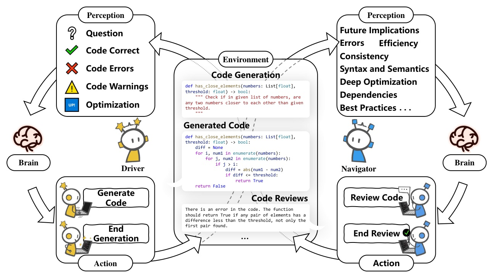
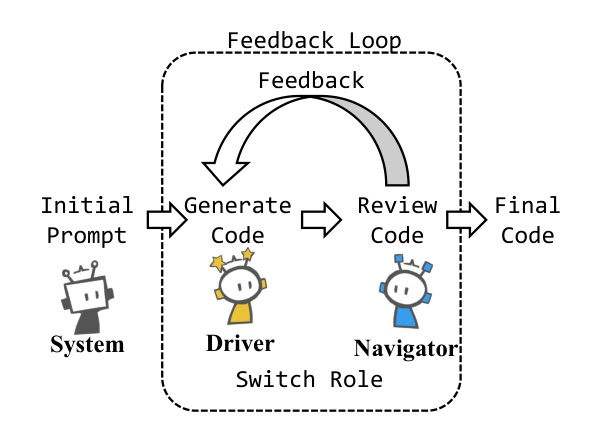
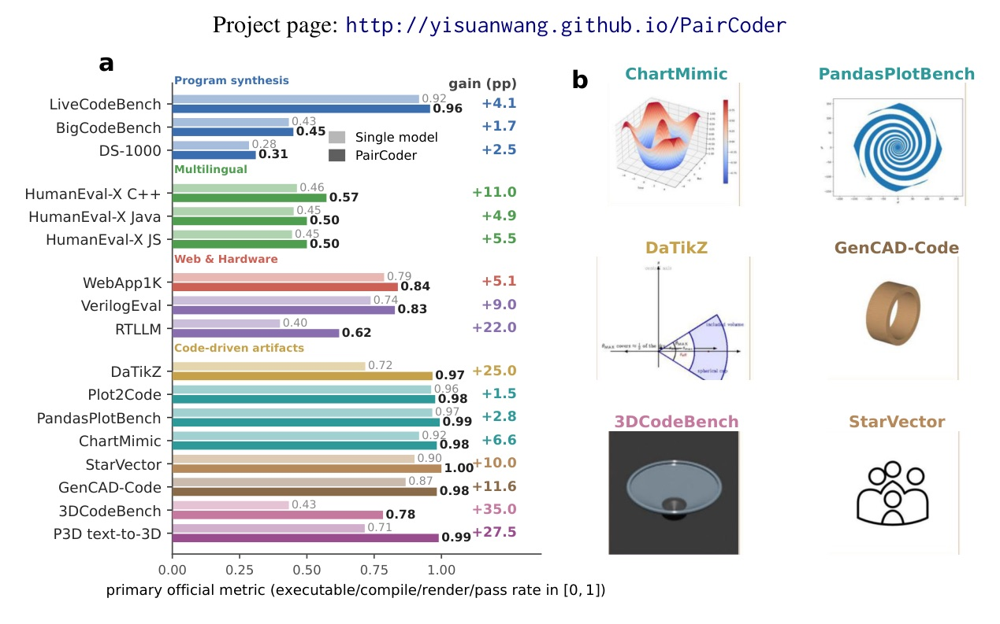
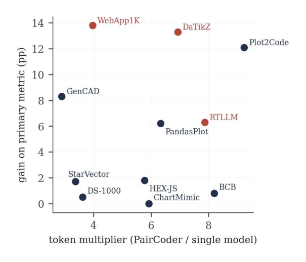
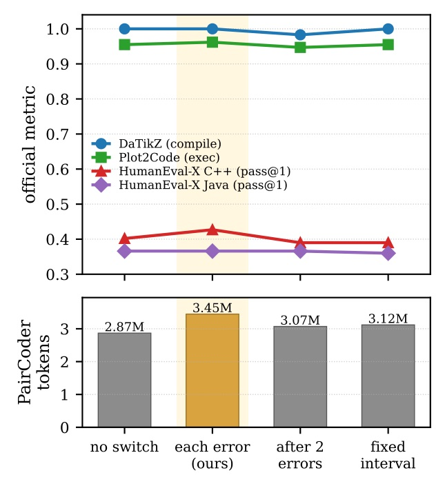
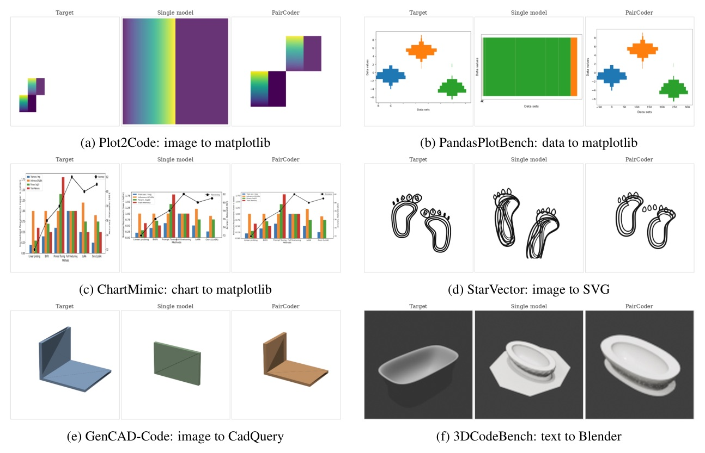

把 toolchain 變成第二位工程師能引用的證據。
PairCoder 用 Driver 寫程式、Navigator 看 compiler / executor / renderer 證據審查；錯誤持續時，診斷者直接接手修復。
Multi-agent team / pipelines
Single-model self-correction

第二視角之所以有用，是因為它看到第一位看不到的證據。
ψt 包含 compile / execute predicate、diagnostic、可選測試、以及 current render vs target。這讓 critique 從「我覺得」變成可定位、可修復的工程訊號。

| Benchmark / claim | Single | PairCoder | Source |
|---|---|---|---|
| OpenAI Table-1 cells | baseline | 44 / 48 improved | §4.2 p.7-9 |
| LiveCodeBench gpt-5.4-mini | 0.942 | 0.992 | Table 1 p.8 |
| HumanEval-X C++ gpt-5.5 | 0.524 | 0.835 | Table 1 p.8 |
| DaTikZ gpt-5.4 compile | 0.717 | 0.967 | Table 1 p.8 |
| 3DCodeBench gpt-5.4-mini exec | 0.200 | 0.783 | Table 1 p.8 |

| P3D text-to-3D gpt-5.4 | Single | PairCoder | Interpretation |
|---|---|---|---|
| valid ↑ | 0.715 | 0.990 | repairs non-executable programs |
| geometry ↑ | 0.347 | 0.483 | coverage improves |
| topology ↑ | 0.708 | 0.983 | same pattern |


BigCodeBench
DS-1000

PairCoder 的本質是把「生成」改造成「有驗證證據的工程 review」。
對 AI 圖像 / 3D / CAD 工程來說，這意味著 prompt chaining 應該圍繞 renderer diagnostics、visual diff、geometry tests 設計，而不是只加更多 reflective text。
“In this regime single pass inference is brittle, because the compiler, renderer, or simulator that decides whether the artifact exists is invisible to the model.”
在這種設定下，單次推論很脆弱，因為真正決定 artifact 是否存在的 compiler / renderer / simulator 對模型不可見。Abstract p.1
“This grounding is what makes the second perspective informative rather than a paraphrase of the first.”
這種 grounding 讓第二個視角真的有資訊量，而不是第一個模型的改寫。§3.2 p.5
“The agent that diagnosed the fault is the one best positioned to fix it.”
剛診斷出錯誤的 agent，最適合在下一輪親自修復它。§4.6 p.11
“Gains concentrate where the artifact is verifiable and the baseline leaves headroom, and fade where the oracle is weak.”
收益集中在 artifact 可驗證且 baseline 還有空間的任務；oracle 弱時，收益就會消退。Conclusion p.13
把 renderer / compiler / simulator 變成 reviewer 的共同語言，才是 agentic code generation 真正可靠化的槓桿。